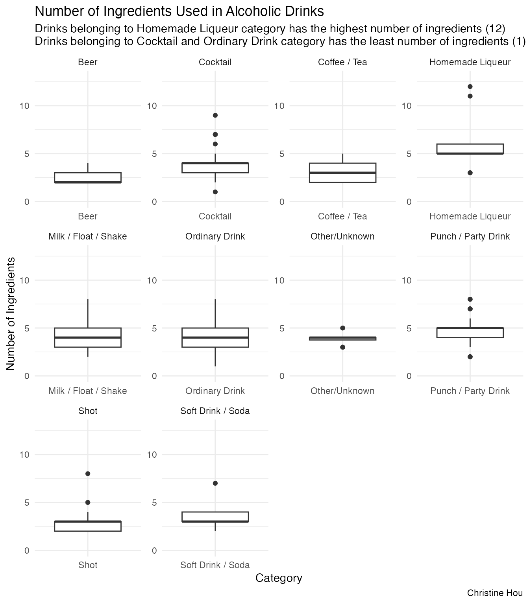

install.packages("jpeg")Data Wrangling
The source showing Cocktail data for analysis comes from TidyTuesday,
May
26th 2020. There are totally 2 different .csv data on
the website, but I only choose one of them for personal preferences.
# Test if a directory named data exists locally
if (!dir.exists(here::here("data"))) {
dir.create(here::here("data"))
}
# saves data only once
files = c("tuesdata_cocktails.rda")
if (any(!file.exists(here::here("data",files)))) {
tuesdata <- tidytuesdayR::tt_load('2020-05-26')
cocktails <- tuesdata$cocktails
# save the files to RDA objects
save(cocktails, file = here::here("data","tuesdata_cocktails.rda"))
}Let’s have a quick look at the dataset.
# load the data
load(here::here("data","tuesdata_cocktails.rda")) #cocktails
n_unique <- function(x) length(unique(x))
purrr::map_int(.x = cocktails,
.f = n_unique)
row_id drink date_modified id_drink
546 546 546 546
alcoholic category drink_thumb glass
5 11 546 36
iba video ingredient_number ingredient
4 1 12 333
measure
435
purrr::map_chr(.x = cocktails,
.f = typeof)
row_id drink date_modified id_drink
"double" "character" "double" "double"
alcoholic category drink_thumb glass
"character" "character" "character" "character"
iba video ingredient_number ingredient
"character" "logical" "double" "character"
measure
"character" Notice that there exists NA values in the dataset, so be careful afterwards in visualizations.
There are totally 2104 rows and 13 variables in the dataset.
Here is a data dictionary for what all the column names mean.
- https://github.com/rfordatascience/tidytuesday/tree/master/data/2020/2020-05-26#cocktailscsv:~:text=Data%20Dictionary-,cocktails,-.csv
In this analysis, I would like to know How does the number of ingredients used related to the different categories of alcoholic cocktail drinks?
Visualization
We only consider alcoholi cocktails in this sample analysis, and there are 478 types of alcoholic drinks included.
df1 = cocktails %>%
filter(alcoholic == "Alcoholic") %>%
select(category,drink, ingredient, ingredient_number) %>%
pivot_wider(names_from = "ingredient_number",
values_from = "ingredient") %>%
group_by(category) %>%
summarize(n = n())
df1
[38;5;246m# A tibble: 10 × 2
[39m
category n
[3m
[38;5;246m<chr>
[39m
[23m
[3m
[38;5;246m<int>
[39m
[23m
[38;5;250m 1
[39m Beer 13
[38;5;250m 2
[39m Cocktail 57
[38;5;250m 3
[39m Coffee / Tea 17
[38;5;250m 4
[39m Homemade Liqueur 12
[38;5;250m 5
[39m Milk / Float / Shake 11
[38;5;250m 6
[39m Ordinary Drink 272
[38;5;250m 7
[39m Other/Unknown 12
[38;5;250m 8
[39m Punch / Party Drink 25
[38;5;250m 9
[39m Shot 49
[38;5;250m10
[39m Soft Drink / Soda 10
df1 %>%
ggplot() +
geom_col(aes(x = category, y = n),
fill = "#66c2a5") +
labs(
title = "Number of Drinks in Alcoholic Cocktail Categories",
subtitle = "Ordinary Drink has the most count among all alcoholic drink categories\nMilk/Float/Shake has the least count",
x = "Category",
y = "Count",
caption = "Christine Hou"
) +
theme_classic() +
theme(axis.text.x = element_text(angle = 45, hjust = 1))df2 = cocktails %>%
filter(alcoholic == "Alcoholic") %>%
select(drink, category,ingredient, ingredient_number) %>%
group_by(drink) %>%
summarize(num_ing = n()) %>%
group_by(num_ing) %>%
summarize(num =n()) %>%
mutate(percentage = num/sum(num)*100) %>%
mutate(num_ing = as.factor(num_ing))
df2
[38;5;246m# A tibble: 11 × 3
[39m
num_ing num percentage
[3m
[38;5;246m<fct>
[39m
[23m
[3m
[38;5;246m<int>
[39m
[23m
[3m
[38;5;246m<dbl>
[39m
[23m
[38;5;250m 1
[39m 1 3 0.628
[38;5;250m 2
[39m 2 77 16.1
[38;5;250m 3
[39m 3 156 32.6
[38;5;250m 4
[39m 4 107 22.4
[38;5;250m 5
[39m 5 76 15.9
[38;5;250m 6
[39m 6 42 8.79
[38;5;250m 7
[39m 7 8 1.67
[38;5;250m 8
[39m 8 6 1.26
[38;5;250m 9
[39m 9 1 0.209
[38;5;250m10
[39m 11 1 0.209
[38;5;250m11
[39m 12 1 0.209
df2 %>%
ggplot()+
geom_bar(aes(x = "", y = percentage, fill = num_ing),
stat = "identity") +
coord_polar(theta = "y", start=0) +
theme_void() +
labs(title = "Distribution of Ingredients Used in Alcoholic Drinks",
subtitle = "Most alcoholic drinks use 2-5 ingredients",
caption = "Christine Hou",
fill = "Number of Ingredients")df3 = cocktails %>%
filter(alcoholic == "Alcoholic") %>%
select(drink, category,ingredient, ingredient_number) %>%
group_by(drink,category) %>%
summarize(num_ing = n(),
.groups = 'drop')
df3
[38;5;246m# A tibble: 478 × 3
[39m
drink category num_ing
[3m
[38;5;246m<chr>
[39m
[23m
[3m
[38;5;246m<chr>
[39m
[23m
[3m
[38;5;246m<int>
[39m
[23m
[38;5;250m 1
[39m '57 Chevy with a White License Plate Cocktail 2
[38;5;250m 2
[39m 1-900-FUK-MEUP Shot 8
[38;5;250m 3
[39m 110 in the shade Beer 2
[38;5;250m 4
[39m 151 Florida Bushwacker Milk / Float / Shake 8
[38;5;250m 5
[39m 155 Belmont Cocktail 4
[38;5;250m 6
[39m 24k nightmare Shot 4
[38;5;250m 7
[39m 252 Shot 2
[38;5;250m 8
[39m 3 Wise Men Shot 3
[38;5;250m 9
[39m 3-Mile Long Island Iced Tea Ordinary Drink 8
[38;5;250m10
[39m 410 Gone Ordinary Drink 1
[38;5;246m# ℹ 468 more rows
[39m
df3 %>%
ggplot() +
geom_boxplot(aes(x = category, y = num_ing)) +
facet_wrap(~category, scales = "free") +
theme_minimal() +
coord_cartesian(ylim = c(0,13)) +
labs(
x = "Category",
y = "Number of Ingredients",
title = "Number of Ingredients Used in Alcoholic Drinks",
subtitle = "Drinks belonging to Homemade Liqueur category has the highest number of ingredients (12)\nDrinks belonging to Cocktail and Ordinary Drink category has the least number of ingredients (1)",
caption = "Christine Hou"
)
We can use the functions in jpeg to display the picture
of the cocktail. For example, the alcoholic drink with 12 ingredients
belonging to Homemade Liqueur category is
url = cocktails %>%
filter(category == "Homemade Liqueur",
ingredient_number == 12) %>%
pull(drink_thumb)
if (!file.exists("homemade.jpg")) {
download.file(url,
destfile = paste0(getwd(),"/homemade.jpg"),
mode = "wb")
}
myjpeg_array <- readJPEG(source = "homemade.jpg")
plot(0:10,0:10,type="n",ann=FALSE,axes=FALSE)
rasterImage(myjpeg_array,0,0,6,10)We can also rewrite the jpg to higher quality if the plot itself is not clear.
Conclusion
There are totally 478 alcoholic drinks, and Ordinary Drink is the most common category. Every drink contains different ingredients inside, and most drinks contain 3-5 ingredients inside. Drinks belonging to Homemade Liqueur category has the highest number of ingredients which is 12, and some drinks belonging to Cocktail and Ordinary Drink category has the least number of ingredients which is 1.